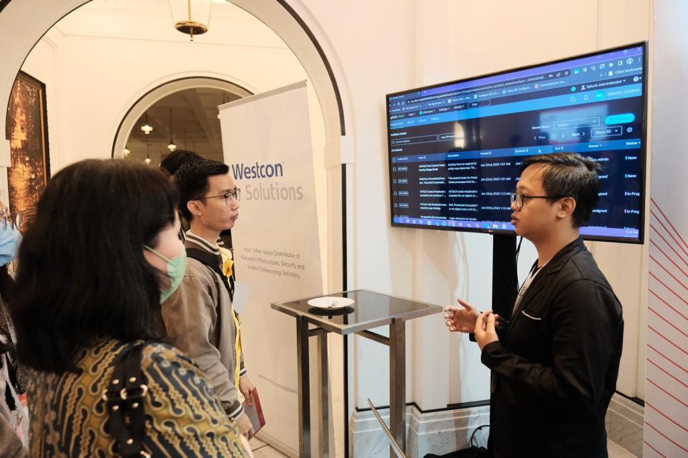
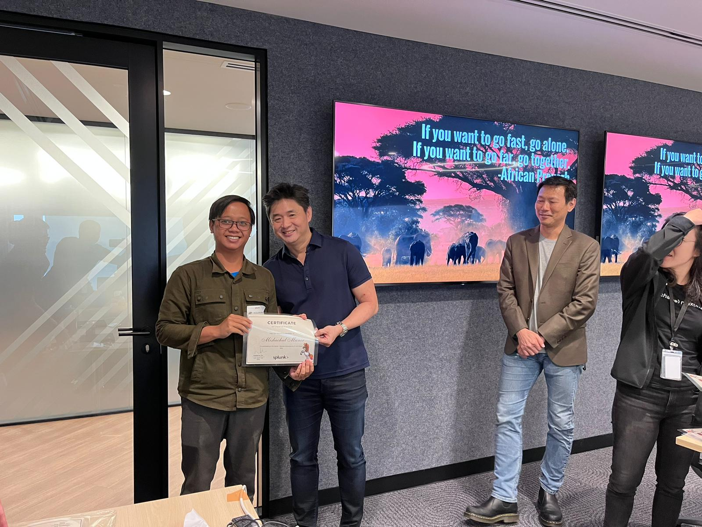

SIEM Consultant • Observability Consultant • Data Analytics • Python Programmer
GitHub UNSIA SplunkSaya adalah mahasiswa Program Studi S1 PJJ Informatika Universitas Siber Asia yang memiliki minat besar pada bidang Cyber Security, Observability, dan Data Analytics. Saat ini saya bekerja sebagai Splunk Consultant yang bertanggung jawab terhadap pembuatan solusi dengan platform Splunk khususnya dibidang SIEM, SOAR, APM, dan Observability.
Saya percaya bahwa continuous learning merupakan kunci utama dalam menghadapi perkembangan teknologi. Oleh karena itu saya terus meningkatkan kemampuan pada bidang Cyber Security, Monitoring System, Python Programming, Data Analytics, dan Enterprise IT Infrastructure.
| Tahun | Institusi | Program Studi |
|---|---|---|
| 2026 - Sekarang | Universitas Siber Asia | S1 PJJ Informatika |
| 2012 - 2015 | SMK Assaidiyyah Kudus | Rekayasa Perangkat Lunak |
| Perusahaan | Posisi | Periode |
|---|---|---|
| Perusahaan Saat Ini | Splunk Consultant | 2022 - Sekarang |
| Perusahaan Sebelumnya | IT Security Analyst | 2021 - 2022 |
| Perusahaan Sebelumnya | System Administrator | 2020 - 2021 |


Berikut beberapa tautan yang dapat digunakan untuk mengetahui lebih lanjut mengenai institusi dan pekerjaan saya: